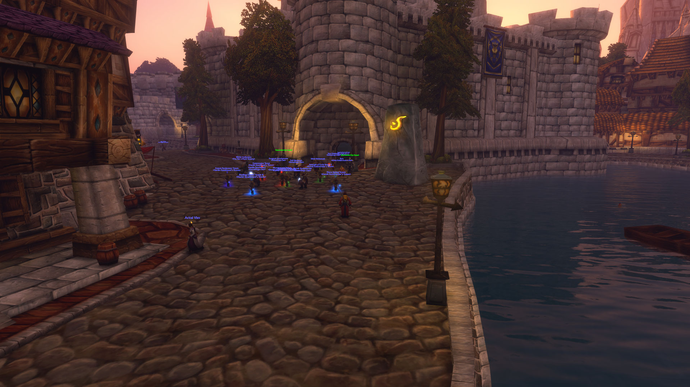
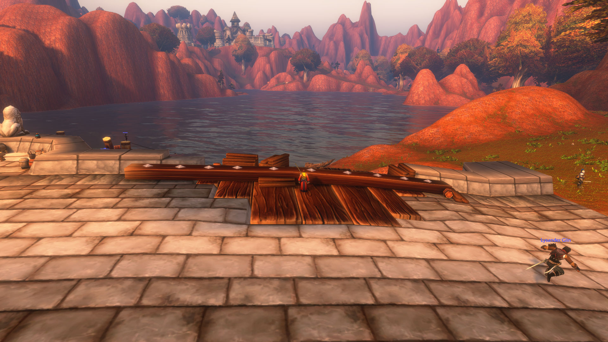
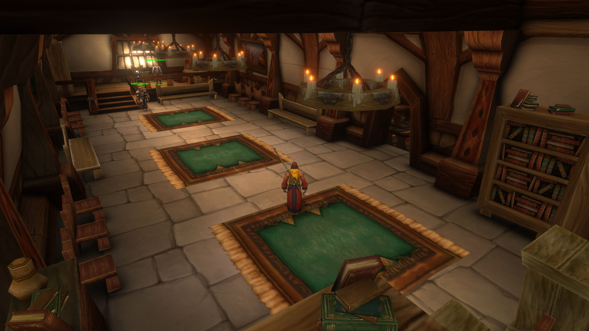
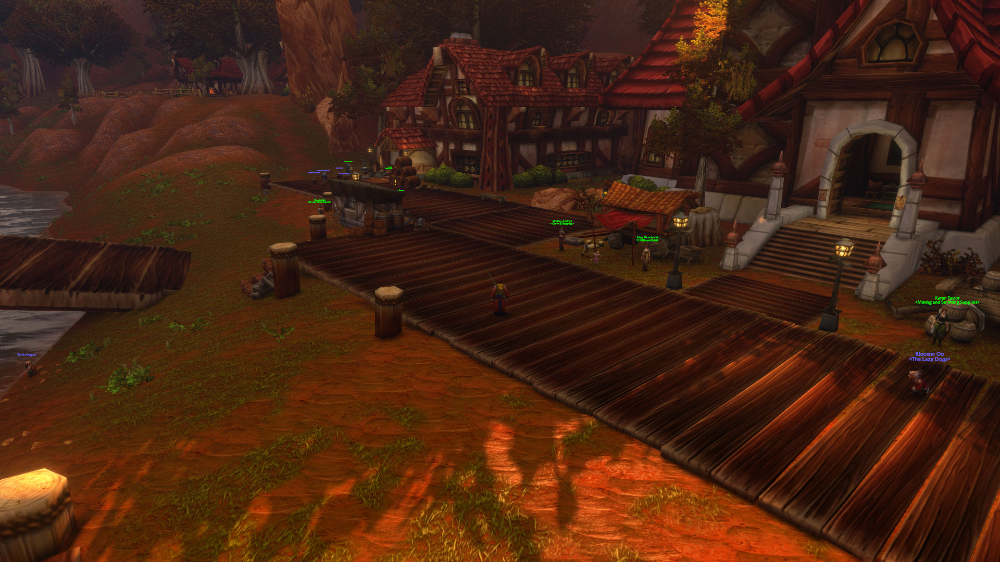
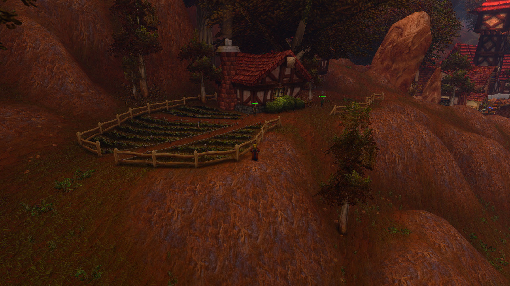
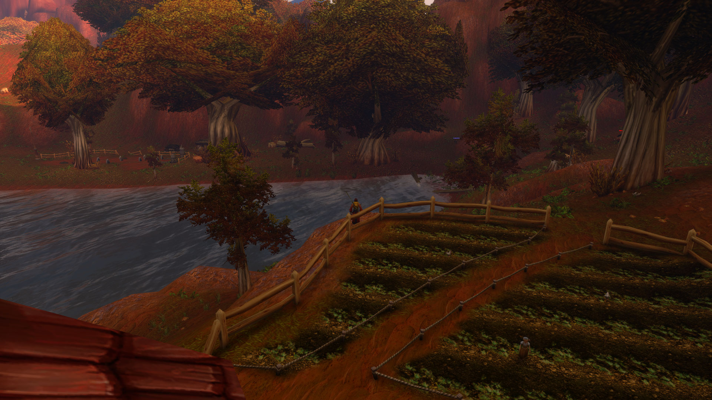

NEXT EXPEDITION · ANNOUNCED · 14 NOVEMBER 2026
The Stockade
The Gates Beneath the City
Xuthar Morvayne & Carro Steelcave · Together again. The Deadmines were only the beginning.

The Quiet Work of Heroes
The bridge at Lakeshire was still a promise interrupted. Beams lay across the broken crossing, their dark wood pointing toward the water as though the town had tried to reach the opposite shore and lost its strength halfway. Xuthar stopped there. Across Lake Everstill the mountains burned red beneath the afternoon sky. After the cramped darkness of the Deadmines, that breadth of light felt almost impossible.
Westfall had taught him to recognize a country that needed help. Redridge spoke the same language with different voices: a missing necklace, lost tools, a meal carried to someone who had waited too long. There were messengers whose words mattered more than their weapons, and shoes whose humble price belonged to a life the great histories would never trouble to record. Xuthar wrote those names carefully. A witness who remembered only kings had understood very little.
Inside the town hall, candlelight collected on the green carpets. Beyond the benches stood Magistrate Solomon, surrounded by the weight of a settlement that could not afford another disaster. Xuthar listened. Blackrock weapons, stolen supplies, the threat of Shadowhide gnolls: the ledger grew longer even as other lines were finally crossed through.
At the waterfront the boards gave softly beneath his boots. He thought of the fish still missing from his catch, of ingredients waiting to become a proper meal, of the hills where dangerous work remained. Nine spotted sunfish were close to ten, but close was not finished. Redridge would have to keep a place for him.
Above the water he found small plots of cultivated earth beneath enormous trees. Here the world had not become peaceful; someone had simply planted a garden in spite of it. Xuthar stood by the fence until the wind turned. Then he tightened the straps of his pack and took the road home.
Two Heroes, One More Descent
Stormwind rose before him in pale stone and evening warmth. He had returned from Redridge carrying the smell of lake water and red earth, but the city offered no promise of rest. Along its canals people were gathering before a doorway that seemed too ordinary to contain the next chapter of their lives.
The Stockade. A prison beneath the capital itself. In Westfall danger had waited beyond the last farm and under the abandoned town. Here it lay beneath streets where merchants still counted coins and children still ran after one another. The nearness of ordinary life made the thought colder.
Carro Steelcave would go with him again. Their separate roads had lasted only a little while, yet the thought of another descent together changed the weight of everything Xuthar carried. He remembered timber tunnels, the furnace glow, the ship hidden beneath the earth. He remembered standing beside his friend when VanCleef could threaten them no longer.
This time there would be no distant horizon to warn them when the city ended. There would be a threshold, a stair, and the sound of doors. Xuthar looked toward the entrance and allowed himself a small smile. “Apparently,” he murmured, “we have developed a very unusual taste in evening walks.”
He opened his ledger to a clean page. He did not write victory. He wrote Carro’s name beside his own, and beneath them a single promise: we go together. The rest would have to be earned below.
Before the First Door Opens
Before any blade was drawn, Xuthar rehearsed the lessons the mines had left him. The moment before a fight belonged to the whole company: a glance to see who was ready, enough breath for the healer, enough space to retreat without finding another enemy behind them. Courage could open a door. Patience decided whether anyone came back through it.
In his imagination the prison corridors narrowed around the lantern. Every open cell became a question. He pictured himself keeping the path behind clear, listening for his companions, refusing the temptation to chase a fleeing shadow into a room they had not yet seen. There was no glory in turning one battle into four because a man disliked waiting.
For a moment he let the coming names settle in his mind like stones placed on a map. They were warnings, not trophies. Whatever awaited beneath the city would reveal itself in its own time, and he would write the truth afterward. Tonight his task was simpler: mend what was torn, prepare what could be prepared, and arrive beside his friend.
Above the prison the canal reflected the last light. Redridge remained unfinished behind him; the Stockade remained unopened ahead. Between those two roads stood Xuthar Morvayne, no longer quite the traveler who had first entered Northshire, still willing to be afraid, and still willing to go.
The prison briefing
Classic reference; confirm Forever differences in game. Enter with Carro and a suitable party. At level 19, let stronger allies lead pulls and keep your distance.
- Clear the entry hall and patrols; pull enemies back into cleared ground. Stop fleeing prisoners before they reach another cell.
- Take the western wing for Dextren Ward; clear nearby enemies and prepare for fear.
- Return through the junction, then clear the eastern wing. Interrupt Hamhock’s Chain Lightning; finish at Bazil Thredd.
- Search cells for Targorr the Dread and Kam Deepfury. Bruegal Ironknuckle is a rare encounter, never guaranteed.
Before entering, check The Stockade Riots with Warden Thelwater. Other Classic assignments: Quell the Uprising, The Color of Blood, Crime and Punishment, What Comes Around and The Fury Runs Deep. Their levels and prerequisites vary; none is added to Xuthar’s accepted quests without confirmation.
Rest, rebuff and agree on targets. Xuthar should conserve mana for emergency healing and avoid fear effects near uncleared rooms.
Redridge, in original Full HD









